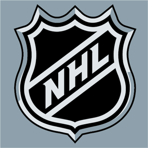

Hockey Legends
NHL'S BEST
| Player |
Year |
Games Played |
Goals |
Assists |
Points |
Penalty Minutes |
| Bobby Orr |
1966-1967 |
61 |
13 |
28 |
41 |
102 |
| Bobby Orr |
1967-1968 |
46 |
11 |
20 |
31 |
63 |
| Bobby Orr |
1968-1969 |
67 |
21 |
43 |
64 |
133 |
| Bobby Orr |
1969-1970 |
76 |
33 |
87 |
120 |
125 |
| Bobby Orr |
1970-1971 |
78 |
37 |
102 |
139 |
91 |
| Bobby Orr |
1971-1972 |
76 |
37 |
80 |
117 |
106 |
| Bobby Orr |
1972-1973 |
63 |
29 |
72 |
101 |
99 |
| Bobby Orr |
1973-1974 |
74 |
32 |
90 |
122 |
82 |
| Bobby Orr |
1974-1975 |
80 |
46 |
89 |
135 |
101 |
| Bobby Orr |
1975-1976 |
10 |
5 |
13 |
18 |
22 |
| Bobby Orr |
1976-1977 |
20 |
4 |
19 |
23 |
25 |
| Bobby Orr |
1978-1979 |
6 |
2 |
2 |
4 |
4 |
| Totals |
|
657 |
270 |
645 |
915 |
953 |